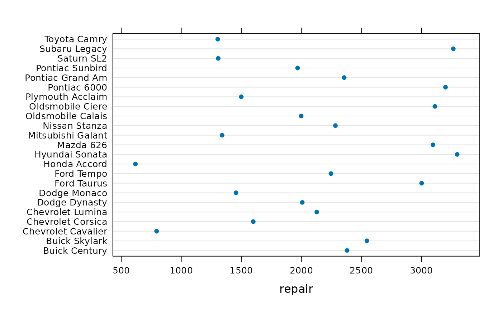

Repair costs of vehicles crashed into a barrier at 5 miles per hour
Data for Exercise 1.73
Bumpers
Format
A data frame/tibble with 23 observations on the following two variables.
- car
a factor with levels
Buick Century,Buick Skylark,Chevrolet Cavalier,Chevrolet Corsica,Chevrolet Lumina,Dodge Dynasty,Dodge Monaco,Ford Taurus,Ford Tempo,Honda Accord,Hyundai Sonata,Mazda 626,Mitsubishi Galant,Nissan Stanza,Oldsmobile Calais,Oldsmobile Ciere,Plymouth Acclaim,Pontiac 6000,Pontiac Grand Am,Pontiac Sunbird,Saturn SL2,Subaru Legacy, andToyota Camry- repair
total repair cost (in dollars) after crashing a car into a barrier four times while the car was traveling at 5 miles per hour
References
Kitchens, L. J. (2003) Basic Statistics and Data Analysis. Duxbury
Examples
#> [1] "Bumpers$repair"#> Size (n) Missing Minimum 1st Qu Mean Median TrMean #> 23.000 0.000 618.000 1456.000 2122.478 2129.000 2138.143 #> 3rd Qu Max. Stdev. Var. SE Mean I.Q.R. Range #> 3002.000 3298.000 798.457 637534.170 166.490 1546.000 2680.000 #> Kurtosis Skewness SW p-val #> -1.140 -0.080 0.287stripchart(Bumpers$repair, method = "stack", pch = 19, col = "blue")library(lattice) dotplot(car ~ repair, data = Bumpers)